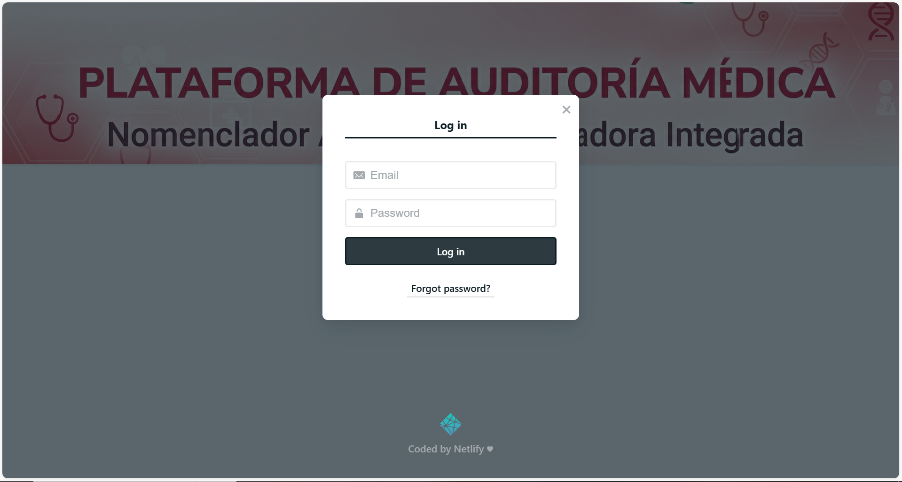
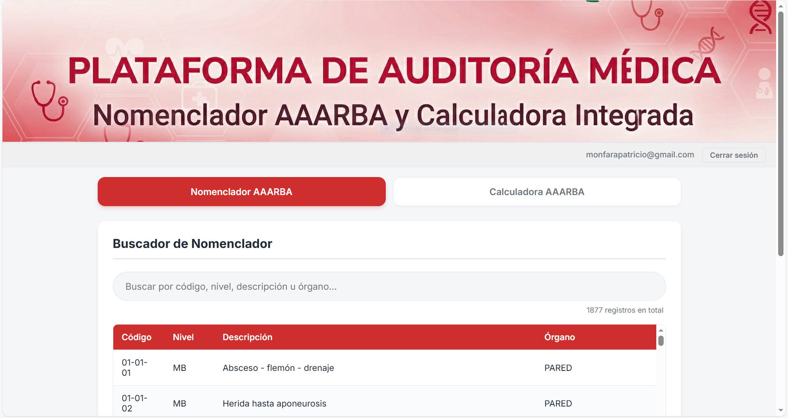
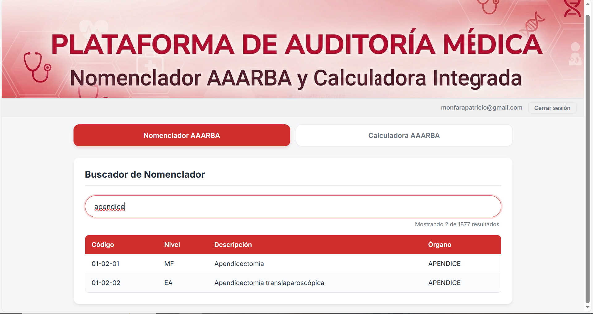
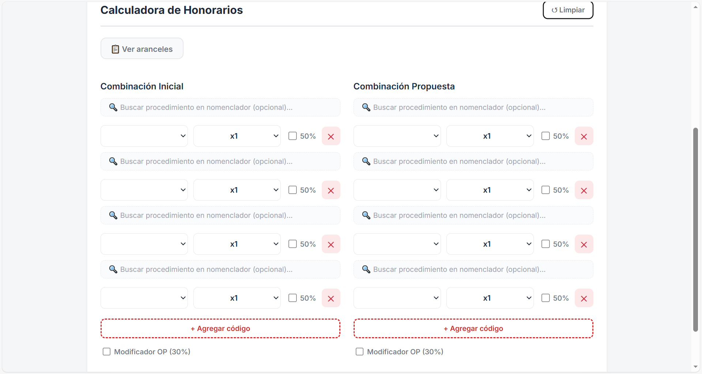
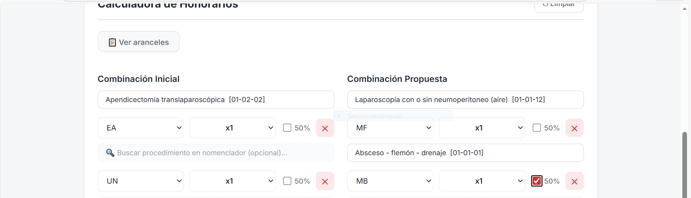
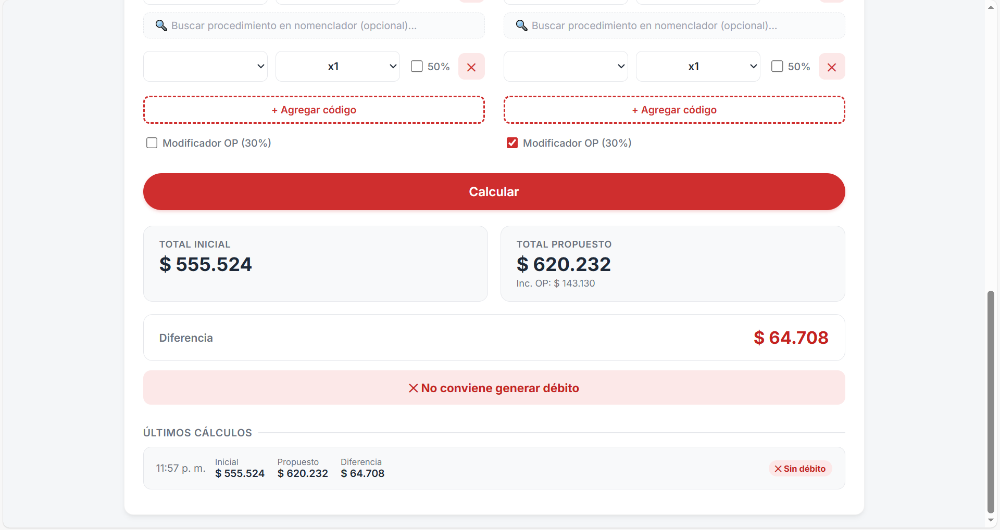
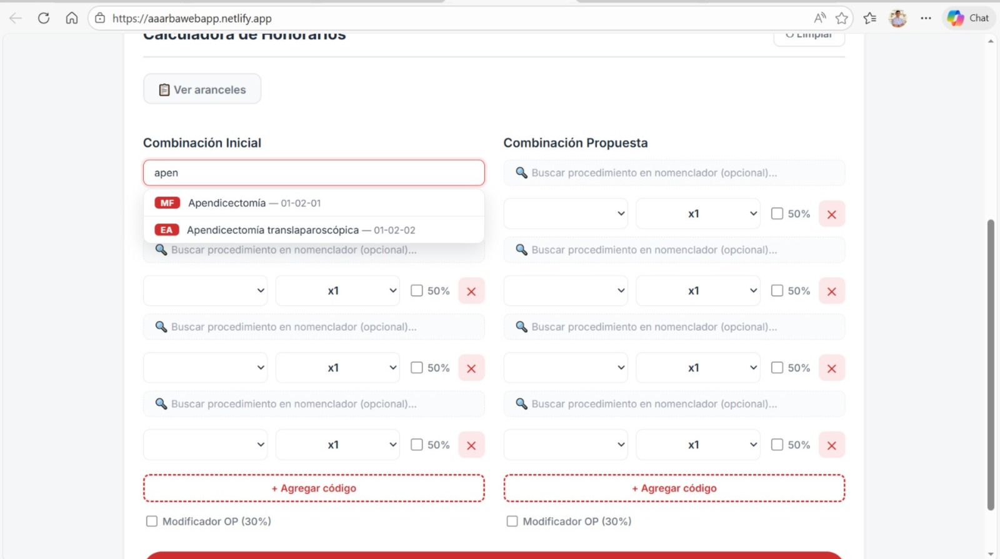
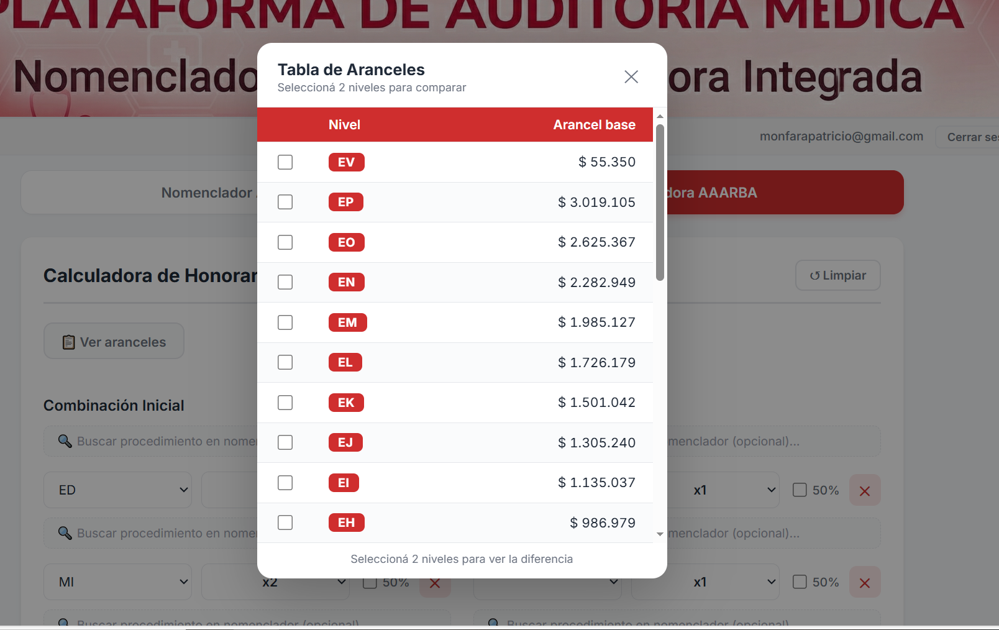
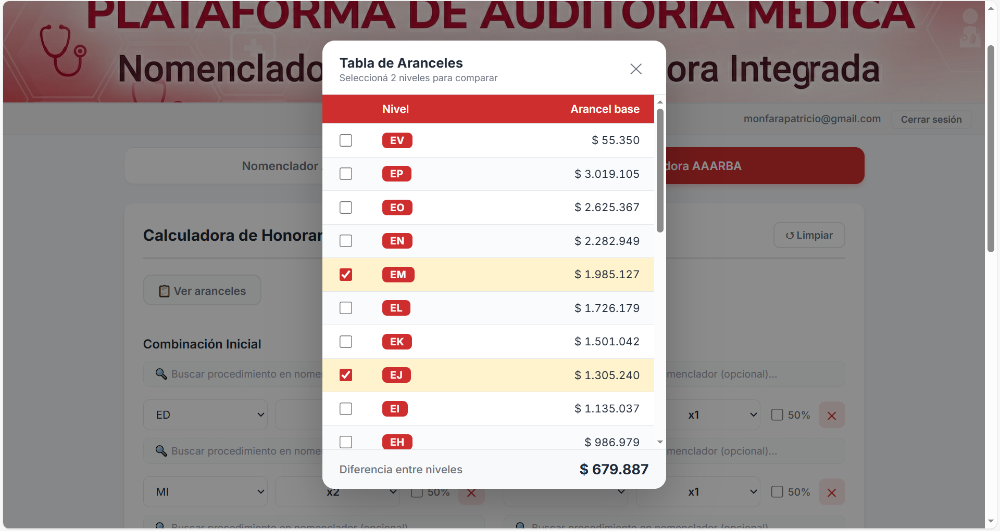
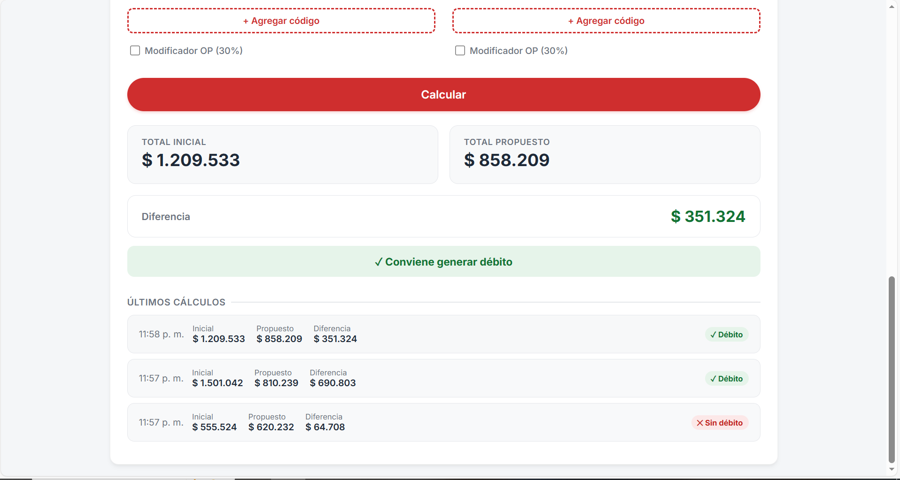

📖 Documentación oficial
Manual de Usuario
AAARBA Web App
Guía completa para utilizar el Nomenclador y la Calculadora de Honorarios Quirúrgicos de Swiss Medical.
Sección 01
Introducción
AAARBA Web App es una herramienta especializada para la auditoría de honorarios quirúrgicos, basada en el Nomenclador de Procedimientos Quirúrgicos AAARBA. Permite buscar códigos, calcular y comparar honorarios.
🔍
Buscador de Nomenclador
Acceda a 1.877 procedimientos médicos con sus códigos, niveles y descripciones. Búsqueda en tiempo real.
🧮
Calculadora de Honorarios
Compare combinaciones de procedimientos con modificadores: factor 50%, OP 30% y multiplicadores x1 a x5.
📋
Tabla de Aranceles
Consulte el arancel vigente de cada nivel. Compare dos niveles para ver su diferencia al instante.
🔒
Acceso Seguro
Login protegido con email y contraseña. Solo usuarios autorizados por Swiss Medical pueden acceder.
Sección 02
Acceso a la Aplicación
La aplicación funciona directamente en el navegador web. No requiere instalación de ningún software.
🌐 URL de la Aplicación
https://aaarbawebapp.netlify.app
Guarde esta URL en sus favoritos para acceder rápidamente.
🖥️ Navegadores Recomendados
| Navegador | Versión mínima | Estado |
|---|
| Google Chrome | 90+ | ✓ Recomendado |
| Microsoft Edge | 90+ | ✓ Compatible |
| Mozilla Firefox | 88+ | ✓ Compatible |
| Safari | 14+ | ✓ Compatible |
| Internet Explorer | Cualquiera | ✗ No compatible |
💡
La aplicación es responsive: también puede usarla desde su celular o tablet, aunque se recomienda el uso en computadora para mayor comodidad.
Sección 03
Login y Seguridad
Antes de acceder, deberá autenticarse con sus credenciales. Solo los usuarios invitados por el administrador pueden ingresar.
1
Abra la aplicación en el navegador
Ingrese la URL https://aaarbawebapp.netlify.app. Verá el banner principal y un spinner de "Verificando acceso..."
2
Se abre el popup de login automáticamente
La pantalla de login aparece centrada. Ingrese su email y contraseña proporcionados por el administrador.

Pantalla de login — ingrese su email y contraseña para acceder
3
Ingrese sus credenciales y haga clic en "Log in"
Una vez autenticado, el popup se cierra y la aplicación queda disponible. En la barra superior verá su email y el botón "Cerrar sesión".
Barra superior mostrando el email del usuario y el botón de cerrar sesión
⚠️
¿Olvidó su contraseña? En la pantalla de login, haga clic en "Forgot password?". Recibirá un email con el link para restablecerla. No necesita contactar al administrador.
ℹ️
Cerrar sesión: Haga clic en el botón "Cerrar sesión" en la barra superior. Será redirigido a la pantalla de login. Se recomienda cerrar sesión al terminar de trabajar.
Sección 04
Tab Nomenclador AAARBA
El Nomenclador es la pestaña principal. Contiene los 1.877 procedimientos médicos del nomenclador AAARBA con sus códigos, niveles de complejidad y descripciones.
aaarbawebapp.netlify.app — Nomenclador AAARBA

Vista inicial del Nomenclador con todos los procedimientos cargados
🔍 Cómo buscar un procedimiento
1
Escriba en el campo de búsqueda
Puede buscar por código, nivel, descripción u órgano. No necesita tildes: "apendicectomia" encuentra "Apendicectomía".
2
Vea los resultados filtrados en tiempo real
La tabla se actualiza automáticamente. Un contador debajo del buscador indica cuántos resultados hay.
3
Haga clic en una fila para copiar
Al hacer clic en cualquier fila, se copia automáticamente al portapapeles en el formato: CÓDIGO — NIVEL — DESCRIPCIÓN. Recibirá una notificación de confirmación.
aaarbawebapp.netlify.app — Búsqueda activa

Búsqueda activa — la tabla filtra en tiempo real y el contador muestra cuántos resultados coinciden
💡
Tip: Para volver a ver todos los procedimientos, borre el texto del campo de búsqueda.
Sección 05
Tab Calculadora de Honorarios
La Calculadora es la herramienta central de auditoría. Permite comparar dos combinaciones de procedimientos (Inicial vs Propuesta) con todos sus modificadores y obtener la diferencia de honorarios.
aaarbawebapp.netlify.app — Calculadora

Calculadora en estado inicial — dos columnas: Combinación Inicial (izquierda) y Combinación Propuesta (derecha)
📝 Componentes de cada fila
| Componente | Descripción |
|---|
| 🔍 Buscador | Campo opcional para buscar el procedimiento por descripción. Auto-completa el nivel al seleccionar. |
| Nivel | Desplegable con los 27 niveles del nomenclador (EA, EB, EP, etc.). |
| Multiplicador (x1–x5) | Multiplica el arancel base. Útil cuando el mismo procedimiento se realiza varias veces. |
| 50% | Checkbox que aplica un factor del 50% al arancel del procedimiento. |
| ✕ Eliminar | Quita esa fila de la combinación. |
aaarbawebapp.netlify.app — Combinaciones completadas

Calculadora con combinaciones cargadas — niveles seleccionados, multiplicadores y factores aplicados
⚙️ Modificadores de columna
Debajo de cada columna, encontrará:
➕
+ Agregar código
Agrega una nueva fila vacía a la combinación para sumar más procedimientos.
🏥
Modificador OP (30%)
Si está marcado, se suma un 30% sobre el subtotal de todos los procedimientos de esa columna.
ℹ️
Botón "↺ Limpiar" (esquina superior derecha de la calculadora): resetea toda la calculadora volviendo a 4 filas vacías y sin resultados.
Cómo hacer un cálculo completo
1
Complete la Combinación Inicial
Seleccione los niveles, ajuste multiplicadores y factor 50% para cada procedimiento. Active OP si corresponde.
2
Complete la Combinación Propuesta
Repita el proceso en la columna derecha con los procedimientos propuestos.
3
Haga clic en "Calcular"
El botón está centrado al pie de las dos columnas. El resultado aparece debajo.
aaarbawebapp.netlify.app — Resultado del cálculo

Resultado del cálculo — tarjetas con totales, diferencia en color y conclusión de auditoría
📊 Cómo interpretar el resultado
$
Total Inicial / Total Propuesto
Suma de todos los procedimientos de cada columna con sus modificadores aplicados.
△
Diferencia (en verde)
El Propuesto es menor que el Inicial. Conviene generar el débito.
△
Diferencia (en rojo)
El Propuesto es mayor que el Inicial. No conviene generar el débito.
Sección 06
Búsqueda por Fila en la Calculadora
Cada fila de la calculadora tiene un campo de búsqueda integrado que permite encontrar un procedimiento del nomenclador y auto-completar el nivel, sin tener que ir al Tab Nomenclador.
aaarbawebapp.netlify.app — Buscador por fila

Campo de búsqueda de nomenclador integrado en cada fila de la calculadora
1
Haga clic en el campo "🔍 Buscar procedimiento..."
Está ubicado en la parte superior de cada fila, antes del selector de nivel.
2
Empiece a escribir el nombre del procedimiento
Aparecerá un dropdown con hasta 8 sugerencias. Puede escribir con o sin tildes.
3
Seleccione el procedimiento
Al hacer clic en un ítem del dropdown, el nivel se auto-completa automáticamente. El campo muestra la descripción y el código del procedimiento seleccionado.
4
Ajuste multiplicador y factor 50% si necesita
El nivel ya estará seleccionado. Solo reste configurar los modificadores adicionales.
💡
Tip: Si prefiere seleccionar el nivel directamente (sin buscar), simplemente ignore el campo de búsqueda y use el desplegable de nivel. Ambas formas son válidas.
Sección 07
Tabla de Aranceles y Comparador
El popup de aranceles muestra el valor vigente de cada nivel. Ideal para consultas rápidas sin necesidad de ingresar datos en la calculadora.
📋 Cómo acceder
En la pestaña Calculadora, haga clic en el botón "📋 Ver aranceles" debajo del encabezado. Se abrirá un modal centrado con la tabla completa.
aaarbawebapp.netlify.app — Tabla de Aranceles

Popup de aranceles con los 27 niveles y sus valores vigentes
⚖️ Comparador de Niveles
1
Marque el checkbox de dos niveles
En la primera columna de la tabla, haga clic en el checkbox de los dos niveles que desea comparar. Solo puede seleccionar dos a la vez.
2
La diferencia aparece al pie del popup
Al seleccionar el segundo nivel, se calcula y muestra automáticamente la diferencia de arancel entre ambos.
aaarbawebapp.netlify.app — Comparador activo

Comparador activo — dos niveles seleccionados y diferencia calculada al pie
⚠️
Actualización de aranceles: Los valores se actualizan mensualmente. Si necesita verificar la vigencia de los datos, consulte con el administrador del sistema.
Sección 08
Historial de Cálculos
La aplicación registra los últimos 5 cálculos realizados durante la sesión. Permite volver a ver resultados anteriores sin tener que re-ingresar los datos.
aaarbawebapp.netlify.app — Historial de cálculos

Sección "Últimos cálculos" — aparece automáticamente debajo del resultado
🕐 Qué muestra cada ítem del historial
🕐
Hora del cálculo
Muestra la hora exacta en que se realizó (ej: 14:32).
$
Total Inicial, Propuesto y Diferencia
Los tres valores del resultado de ese cálculo.
✓
Insignia de conclusión
Verde (✓ Débito) o Rojo (✕ Sin débito) según el resultado.
⚠️
Importante: El historial es temporal. Se borra al cerrar sesión o recargar la página. Para guardar resultados importantes, realice una captura de pantalla o anote los valores.
💡
Tip: Haga clic en cualquier ítem del historial para restaurar ese resultado en la sección de resultados arriba, sin necesidad de recalcular.
Sección 09
Tips y Mejores Prácticas
Recomendaciones para aprovechar la aplicación al máximo y evitar errores comunes.
🔤
Búsqueda sin tildes
Puede escribir "colecistectomia" y encontrará "Colecistectomía". La búsqueda es flexible con acentos y mayúsculas.
📋
Copiar desde el Nomenclador
Al hacer clic en una fila, obtiene el formato "CÓDIGO - NIVEL - DESCRIPCIÓN" listo para pegar en documentos o informes.
✖️
Usar multiplicadores eficientemente
En lugar de agregar la misma fila dos veces para un ED doble, use una sola fila ED con multiplicador x2. Es más rápido y evita errores.
⚡
Buscar directamente en la fila
Para ingresar procedimientos rápidamente, use el buscador integrado en cada fila en lugar de ir y volver del Tab Nomenclador.
↺
Limpiar antes de cada nuevo caso
Haga clic en "↺ Limpiar" antes de comenzar un nuevo análisis para evitar mezclar datos de casos distintos.
📸
Guardar resultados importantes
El historial se borra al cerrar sesión. Capture pantallas (Win + Shift + S) de los resultados que necesite conservar.
📐
Factor 50% vs Multiplicador
Son modificadores independientes. El 50% reduce el arancel a la mitad. El multiplicador (x2, x3) lo duplica o triplica. Se aplican juntos: ED con x2 y 50% = ED × 2 × 0.5 = 1 ED completo.
🏥
El OP 30% se aplica al final
El modificador OP se calcula sobre el subtotal de todos los procedimientos de esa columna. No se aplica procedimiento por procedimiento.
🖨️
Imprimir este manual
Use Ctrl + P en su navegador para imprimir este manual. Está optimizado para impresión y se ve correctamente en papel.
Sección 10
Preguntas Frecuentes
Respuestas a las dudas más comunes de los usuarios de la plataforma.
¿Olvidé mi contraseña, qué hago? ▼
En la pantalla de login, haga clic en "Forgot password?". Recibirá un email con un enlace para restablecerla. Siga las instrucciones del email. No necesita contactar al administrador.
¿Por qué no aparece el popup de aranceles? ▼
Asegúrese de estar en la pestaña "Calculadora AAARBA" y de haber iniciado sesión correctamente. Luego haga clic en el botón "📋 Ver aranceles".
¿Cómo sé cuántos resultados encontró la búsqueda? ▼
Debajo del campo de búsqueda aparece un contador: "Mostrando X de 1877 resultados". Si dice "No se encontraron resultados", intente sin tildes o con otra palabra clave.
¿Puedo imprimir o exportar los cálculos? ▼
Puede usar Ctrl + P en el navegador para imprimir la pantalla actual. También puede hacer una captura de pantalla con Win + Shift + S. Versiones futuras incluirán exportación directa a PDF.
¿Dónde se guardan mis cálculos? ▼
Los cálculos se guardan temporalmente en el historial de sesión (últimos 5). Al cerrar sesión o recargar la página, se borran. No hay almacenamiento persistente por usuario en la versión actual.
¿Los datos de la empresa se envían a algún servidor externo? ▼
No. La aplicación funciona en su navegador y los cálculos se realizan localmente. Solo se verifica el login contra el servidor de Netlify Identity. Ningún dato de procedimientos o montos se envía a servidores externos.
¿Qué hago si algo no funciona correctamente? ▼
Intente recargar la página (F5 o Ctrl + R). Si el problema persiste, cierre sesión y vuelva a iniciarla. Si continúa, contacte al administrador del sistema.
¿Con qué frecuencia se actualizan los aranceles? ▼
Los aranceles se actualizan mensualmente. Si tiene dudas sobre la vigencia de los valores actuales, consulte con el administrador del sistema.
¿Puedo usar la app desde el celular? ▼
Sí, la aplicación es responsive y funciona en celulares y tablets. Sin embargo, se recomienda el uso en computadora para mayor comodidad, especialmente en la Calculadora.
AAARBA Web App — Manual de Usuario v1.0
Swiss Medical S.A. · Departamento de Auditoría Médica · Confidencial de uso interno